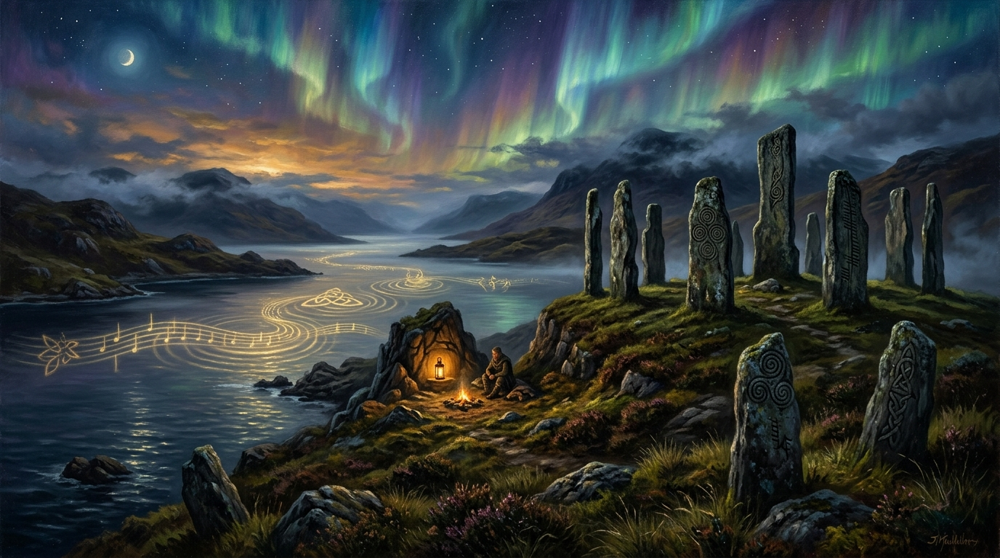

The Scotland Channel
A Cultural Frequency of Sovereignty, Song, and Philosophical Becoming

“Meaning is not created. It is discovered. It is already there, embedded in existence itself.” — Trevor Swistchew
The Sovereignty Frequency Matrix & Media Audit
Archival Research & Thematic AnalysisReclaiming the Lens: Peter & Bobbie Jeal
Founded in August 2024, The Scotland Channel bypassed centralized metropolitan broadcasting filters to give voice to the lived reality of Scotland—its communities, culture, and artistic depth—produced directly by those who walk its soil.
The Scotland Channel began in August 2024 with a simple but powerful idea: that Scotland deserved to be seen and heard by people who actually live its life. Peter and Bobbie Jeal, husband and wife, built it through their Glasgow‑based company S24 TV Limited, drawing on years of shared experience in media, documentary work, and the steady organisational discipline that keeps a broadcaster alive. What they created was not a hobby or a gesture, but a channel shaped by two people who understand Scotland from the inside and care enough to give it a voice of its own.
Peter Jeal's path into the project began long before the channel existed. Educated at the University of Glasgow, he spent years working in documentary and digital media, learning how to tell stories that hold attention and how to shape material that feels true to the place it comes from. His move to Scotland in 1994, and his public involvement in independence‑related media from 2010 onward, gave him a deep familiarity with the country's debates, frustrations, humour, and hopes. That background now colours the channel's tone: independence‑aware, culturally confident, and determined to show Scotland as it understands itself rather than as it is framed from elsewhere.
Beside him, Bobbie Jeal brings the quiet strength that keeps the whole enterprise standing. Her background in business administration and organisational management gives the channel its rhythm—its scheduling, its continuity, its ability to produce material week after week without faltering. She is not a public political voice, but her work behind the scenes is the reason the channel feels steady, friendly, and reliable. The warmth of its presentation owes as much to her as to anything on screen.
Together, the Jeals built The Scotland Channel with clear hopes and clear aims. They wanted Scotland's stories to be told with affection and accuracy. They wanted to widen the space for Scottish‑made programming in a media landscape where only a small fraction of content available in Scotland is actually produced for Scottish audiences. They wanted viewers to feel at home whether watching a documentary on Scotland's wildlife, a piece on its music, or the weekly News4Scotland programme created in partnership with News For Scotland. Above all, they wanted the channel to feel like Scotland speaking in its own voice, not being spoken for.
In 2026, the channel has reached around one million views across its history, a remarkable achievement for a broadcaster only two years old. Its audience now stretches across Scotland, the wider UK, and viewers overseas who find its material through YouTube and partner broadcasters. The Scotland Channel continues to grow with a friendly, confident tone, offering a place where Scotland's stories are told with care, pride, and a sense of belonging.
Here are the remaining essays by Trevor Swistchew, formatted consistently with clean typography, clear metadata, and full text preserved:
Meaning Is Not Manufactured, It Is Found.
For centuries, philosophers have wrestled with the question of meaning. Camus spoke of the absurd, insisting that humans must rebel against a meaningless universe by creating their own purpose. Sartre declared that existence precedes essence, and that man must invent meaning through freedom. Hegel sought meaning in the dialectic of history, while Plato placed it in eternal Forms beyond the material world. Yet all of these thinkers, brilliant though they were, worked within the limits of their time. They lacked access to the breadth of perspectives and global knowledge that we can draw upon today. If they were alive in 2026, they would see that the problem of meaning has been misframed. Meaning is not something to be manufactured by human hands. It is already existing.
Consider the flower in the garden. Does it have meaning? If yes, then the question is redundant — meaning is inherent in its existence. If no, then any attempt to “layer” meaning onto it is futile, because we cannot impart meaning to an object with which we cannot communicate. Either way, the flower exposes the flaw in existentialist reasoning: meaning cannot be invented. It is either present or absent, but never fabricated.
This insight fills the gaps left by Camus, Sartre, Hegel, and even Plato. Camus’s rebellion collapses if meaning is not real. Sartre’s freedom becomes arbitrary if essence is not discovered but merely imagined. Hegel’s dialectic falters if history does not unfold toward a pre-existing truth. Plato came closest with his doctrine of Forms, but even he lacked the vantage point of a world interconnected by knowledge, where the redundancy of “creating” meaning becomes clear.
Religions have long intuited this truth. Heaven, Nirvana, Moksha, Jannah, Olam Ha-Ba — all describe perfected states where meaning is fully realized, not invented. They are visions of utopia, parallel to the philosophers’ ideal societies, but grounded in the conviction that meaning is woven into existence itself.
The atheist premise falters most sharply when confronted with inequality at birth. Why are some born disabled, deprived of senses or limbs, while others are not? If existence were a level playing field, perhaps meaning could be dismissed as human invention. But the stark unfairness of life demands a reckoning. Without an afterlife or cosmic justice, existence itself appears irrational. Meaning must therefore pre-exist, or existence collapses into absurdity.
Thus, the conclusion is unavoidable: meaning is not created. It is discovered. It is already there, embedded in existence, waiting to be recognized. The task of philosophy is not to invent meaning but to uncover it.
If Camus, Sartre, Hegel, and Plato were alive today, they would have access to these thought-through premises. They would see that their reasoning, though profound, was incomplete. They could not access the world as we can — a world where the failures of invention and the necessity of discovery are laid bare. And with this fuller vision, they would recognize that meaning is not the fragile product of human defiance, but the enduring reality that makes existence possible at all.